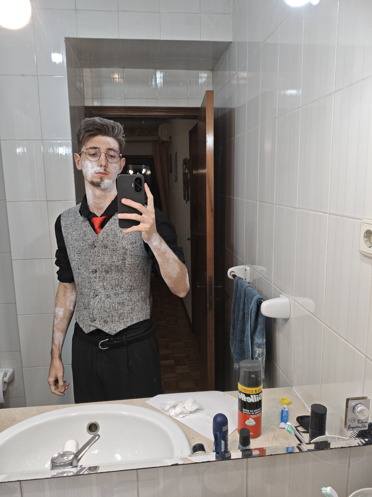

EFEMERIDADE
Fantasia de Halloween — Wendel Risse
Nascimento
Todos os anos minhas fantasias representam um sentimento que marcou aquele período da minha vida. Algumas nasceram do medo. Outras da dor. Outras do fracasso.
Este ano foi diferente.
Foi um dos melhores anos da minha vida. Tão bom que, pela primeira vez, o que mais me assustou não foi algo ruim. Foi perceber que as melhores lembranças estavam desaparecendo.
Todas as noites eu perdia um detalhe.
E eu não conseguia fazer absolutamente nada para impedir.
Efemeridade
Efemeridade é a ideia de que tudo é passageiro. Pessoas. Lugares. Emoções. Memórias. Nada permanece para sempre.
Existe uma dor muito específica em perceber que você não está apenas perdendo um momento... Está perdendo a capacidade de lembrar dele.
Você sabe que foi feliz. Mas já não consegue recordar exatamente o porquê.
Toda noite uma memória desaparece.
Primeiro os lugares.
Depois as cores.
Depois as vozes.
Depois os rostos.
Até restar apenas a certeza de que tudo aquilo existiu.
A Fantasia
Diferente das minhas fantasias anteriores, Efemeridade não representa um monstro.
Ela representa um processo.
O desaparecimento lento de uma lembrança.
A roupa inspirada na moda do século XIX simboliza uma memória presa no tempo, quase como uma fotografia antiga.
A tinta branca representa partes da existência que já foram consumidas pelo tempo. Algumas regiões permanecem vivas. Outras simplesmente desapareceram.
Não existe sangue. Não existe violência. Não existe um vilão.
Existe apenas alguém tentando permanecer vivo dentro da memória de outra pessoa.
